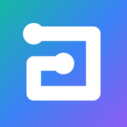

Privacy Policy
Dailies for iPhone · Last updated 14 November 2026
Dailies doesn't collect any data that identifies you. There are no accounts, ads or tracking, and the app has no servers of its own. It sends only anonymous usage statistics, described below.
Your progress and iCloud
Your progress (streaks, times, saved games), coins and settings are stored on your device. If you're signed in to iCloud, the app also keeps a copy of your progress and coins in your own iCloud storage, so they come back after a reinstall and match on your other devices. That copy lives in your iCloud account, which Apple runs; we can't see it. You can turn this off in Settings › [your name] › iCloud.
Game Center
If you use Game Center, the app sends your daily solve times and your streak to Apple's Game Center for the leaderboards. Game Center shows them with your Game Center nickname to other players. Game Center is run by Apple under Apple's Privacy Policy; you can sign out of it in Settings › Game Center.
Anonymous usage statistics
To learn which puzzles are too hard and which features get used, the app sends anonymous usage signals to TelemetryDeck, a privacy-focused analytics service from Germany. A signal says something like "a Crowns puzzle was solved on Medium in 1–2 minutes with no hints" or "the coin shop was opened", plus technical details such as the app and iOS version, the device model and the language. Each device is counted under a random identifier that TelemetryDeck hashes, so it can't be traced back to you or your device. No names, email addresses, Apple Account details, locations or advertising identifiers are collected, and the data is never sold or used to track you across apps or websites. See TelemetryDeck's privacy policy.
Subscriptions
Dailies Plus is sold and billed by Apple. We never see your name, Apple Account or payment details. The app asks Apple, on your device, whether your subscription is active. Apple's handling of purchases is covered by Apple's Privacy Policy.
Sharing results
When you share a result, the app passes a short text (puzzle number and time) to the share sheet. Where it goes is up to you.
Children
The app collects no personal data from anyone, including children. The anonymous usage statistics above contain nothing that identifies a person.
Changes and contact
If this policy changes, the new version will be posted on this page with a new date. Questions: denisryabykh@gmail.com.
Политика конфиденциальности
Dailies для iPhone · Обновлено 14 ноября 2026 г.
Dailies не собирает данных, по которым можно вас узнать. В приложении нет аккаунтов, рекламы и отслеживания, и у него нет своих серверов. Оно отправляет только анонимную статистику использования, о ней ниже.
Прогресс и iCloud
Прогресс (серии, время, сохранённые партии), монеты и настройки хранятся на вашем устройстве. Если вы вошли в iCloud, приложение также хранит копию прогресса и монет в вашем собственном хранилище iCloud, чтобы они вернулись после переустановки и совпадали на других ваших устройствах. Эта копия находится в вашем аккаунте iCloud, которым управляет Apple; мы её не видим. Отключить это можно в «Настройки» › [ваше имя] › iCloud.
Game Center
Если вы пользуетесь Game Center, приложение отправляет в Game Center время решения задач дня и вашу серию для таблиц лидеров. Другие игроки видят их под вашим псевдонимом в Game Center. Game Center работает по политике конфиденциальности Apple; выйти из него можно в «Настройки» › Game Center.
Анонимная статистика
Чтобы понимать, какие задачи слишком сложные и какими функциями пользуются, приложение отправляет анонимные сигналы в TelemetryDeck — сервис аналитики из Германии, построенный вокруг приватности. Сигнал выглядит как «задача Crowns средней сложности решена за 1–2 минуты без подсказок» или «открыт магазин монет», плюс технические сведения: версия приложения и iOS, модель устройства, язык. Устройство учитывается под случайным идентификатором, который TelemetryDeck хеширует, поэтому связать его с вами или вашим устройством нельзя. Имена, адреса почты, данные Apple Account, местоположение и рекламные идентификаторы не собираются; данные не продаются и не используются для отслеживания в других приложениях и на сайтах. Подробнее — в политике конфиденциальности TelemetryDeck.
Подписка
Dailies Plus продаёт Apple и списывает оплату тоже Apple. Мы не видим ваше имя, Apple Account и платёжные данные. Приложение само, на вашем устройстве, спрашивает у Apple, активна ли подписка. Обработку покупок описывает политика конфиденциальности Apple.
Как работает «Поделиться»
Когда вы делитесь результатом, приложение передаёт в системное меню «Поделиться» короткий текст: номер задачи и время. Куда его отправить, решаете вы.
Дети
Приложение не собирает персональных данных ни о ком, в том числе о детях. В анонимной статистике нет ничего, по чему можно узнать человека.
Изменения и связь
Если политика изменится, новая версия появится на этой странице с новой датой. Вопросы: denisryabykh@gmail.com.